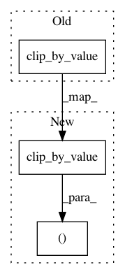

d6559987603c03998ac168187c4515a055116427,art/preprocessing/expectation_over_transformation/natural_corruptions/shot_noise/tensorflow.py,EoTShotNoiseTensorFlow,_transform,#EoTShotNoiseTensorFlow#Any#Any#,66
Before Change
lam_i = np.random.uniform(low=self.lam_range[0], high=self.lam_range[1])
delta_i = tf.random.poisson(shape=x.shape, lam=lam_i, seed=None) / lam_i * self.clip_values[1]
return tf.clip_by_value(x + delta_i, clip_value_min=self.clip_values[0], clip_value_max=self.clip_values[1])
def _check_params(self) -> None:
if not (isinstance(self.lam, (int, float)) or isinstance(self.lam, tuple)) or (
After Change
lam_i = np.random.uniform(low=self.lam_range[0], high=self.lam_range[1])
delta_i = tf.random.poisson(shape=x.shape, lam=lam_i, seed=None) / lam_i * self.clip_values[1]
return tf.clip_by_value(x + delta_i, clip_value_min=self.clip_values[0], clip_value_max=self.clip_values[1]), y
def _check_params(self) -> None:
In pattern: SUPERPATTERN
Frequency: 4
Non-data size: 3
Instances
Project Name: IBM/adversarial-robustness-toolbox
Commit Name: d6559987603c03998ac168187c4515a055116427
Time: 2021-03-03
Author: beat.buesser@ie.ibm.com
File Name: art/preprocessing/expectation_over_transformation/natural_corruptions/shot_noise/tensorflow.py
Class Name: EoTShotNoiseTensorFlow
Method Name: _transform
Project Name: IBM/adversarial-robustness-toolbox
Commit Name: d6559987603c03998ac168187c4515a055116427
Time: 2021-03-03
Author: beat.buesser@ie.ibm.com
File Name: art/preprocessing/expectation_over_transformation/natural_corruptions/zoom_blur/tensorflow.py
Class Name: EoTZoomBlurTensorFlow
Method Name: _transform
Project Name: IBM/adversarial-robustness-toolbox
Commit Name: d6559987603c03998ac168187c4515a055116427
Time: 2021-03-03
Author: beat.buesser@ie.ibm.com
File Name: art/preprocessing/expectation_over_transformation/natural_corruptions/gaussian_noise/tensorflow.py
Class Name: EoTGaussianNoiseTensorFlow
Method Name: _transform
Project Name: IBM/adversarial-robustness-toolbox
Commit Name: d6559987603c03998ac168187c4515a055116427
Time: 2021-03-03
Author: beat.buesser@ie.ibm.com
File Name: art/preprocessing/expectation_over_transformation/natural_corruptions/contrast/tensorflow.py
Class Name: EoTContrastTensorFlowV2
Method Name: _transform